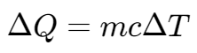

熵和热力学第三定律 | Entropy and Third Law of Thermodynamics
熵 | Entropy
- S – entropy kJ/K
- s - entropy per unit mass, unit kJ/kg · K
- Q is the heat transfer between the system and surroundings
熵变 | Entropy change
对于等温过程，有
熵增法则 | Entropy Increase Principle
The entropy of an isolated system always increases or, there is an entropy generation, except in the limiting case of a reversible process, remains constant.
A system and its surroundings can be viewed as the two subsystems of an isolated system, and the entropy change is the sum:
热力学第三定律 | Third law of thermodynamics
The entropy of a pure crystalline substance at absolute zero temperature is zero.
液体和固体的熵的变化 | Entropy change in liquids/solids

理想气体熵的变化 | Entropy change in ideal gases
理想气体的恒熵过程 | Isentropic processes of ideal gases
例题1
A heat source at 800K loses 2000kJ of heat to a sink at (a) 500K and (b) 750K. Determine which heat transfer process is more irreversible.

这一题需要使用等温熵变公式  同时对 heat source 和 sink 做熵变的计算，再相加为总的熵变。
同时对 heat source 和 sink 做熵变的计算，再相加为总的熵变。
注意⚠️：这种题要注意计算总熵变
(a)
(b)
例题2
0.5 kg of coffee initially at 90℃, cools off to room temperature 20℃.
Calculate entropy changes of coffee and surroundings, and total entropy change.
本题需要使用固液体熵变公式
对于咖啡，
咖啡能量损失 
对于周围环境，
总的熵变
例题3
A 50-kg iron block and a 20-kg copper block, both initially at 80°C, are dropped into a large lake at 15°C. Thermal equilibrium is established after a while as a result of heat transfer between the blocks and the lake water. Determine the total entropy change for this process.  and .
and .
本题需要综合使用等温熵变和固液体熵变公式。
对于 iron 和 copper，其熵变：
对于湖，计算其熵变需要先计算其吸收的热能：
则其熵变：
最后，总熵变：
例题4
Air is compressed in a car engine from 22°C and 95 kPa in a reversible and adiabatic manner. If the compression ratio of this engine is 8, determine the final temperature of the air. (Using )
使用理想气体恒熵过程公式 ,
可得
即可求得答案。